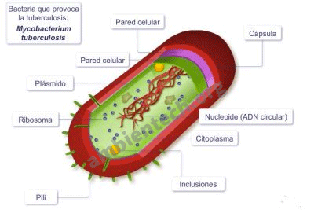

Células Procariotas
Las células procariotas son aquellas que no tienen núcleo diferenciado, de manera que su ADN se encuentra localizado en el citoplasma pero no encerrado en una cubierta membranosa como ocurre con las células eucariotas. Además contienen membrana celular, pared celular, citoplasma y ribosomas. Prácticamente todas las células procariotas son organismos unicelulares.
Tipos de células procariotas:
- Arqueas: Microorganismos unicelulares muy primitivos. La diferencia a nivel molecular entre arquea y bacteria es muy elevada, por ello se clasifican en grupos distintos.
- Bacterias: Organismos microscópicos más evolucionados.

Componentes de las células procariontes
Hay algunos ingredientes esenciales que una célula necesita para ser una célula, ya sea procariota o eucariota. Todas las células comparten cuatro componentes fundamentales:
- La membrana plasmática, que es una cubierta externa que separa el interior de la célula de su entorno.
- El citoplasma, que se compone del citosol gelatinoso al interior de la célula y las estructuras celulares suspendidas en él. En eucariontes, el citoplasma se refiere específicamente a la región que se encuentra fuera del núcleo, pero dentro de la membrana plasmática.
- El ADN, que es el material genético de la célula.
- Los ribosomas, que son máquinas moleculares que sintetizan proteínas.